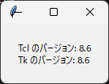

1. tkinter の概要
1.1 tkinter とは
tkinter は、Python に標準で付属している GUI ライブラリです。名前は「Tk interface」に由来します。python.org で配布されている Windows 版と macOS 版のインストーラーには tkinter が含まれているため、追加のインストールは不要です。Linux では、ディストリビューションによっては別のパッケージ（Debian や Ubuntu の python3-tk など）をインストールする必要があります。
tkinter の主な長所と短所は次のとおりです。
区分 |
内容 |
|---|---|
長所 |
標準ライブラリなので、追加のインストールなしで使えます。Windows、macOS、Linux で同じコードが動作します。仕組みが単純で、少ないコードで GUI を作成できます。 |
短所 |
標準のウィジェットの見た目は、最近のアプリケーションと比べると簡素です。動画の再生や Web ページの表示など、高度な機能は用意されていません。 |
小規模なツールや社内向けのアプリケーション、GUI プログラミングの学習には tkinter が適しています。より高度な機能が必要な場合は、PySide6 などのライブラリを検討してください。
1.2 Tcl/Tk との関係
Tk は、Tcl というスクリプト言語のために作られた GUI ツールキットです。tkinter は、Python の中で Tcl のインタープリターを動かし、そのインタープリターを通して Tk を操作します。Python で tk.Tk() を呼び出すと、内部で Tcl のインタープリターが 1 つ作成されます。
Tk の公式リファレンスは Tcl の書式で書かれているため、Python の書式に読み替える必要があります。対応の例を次に示します。
操作 |
Tcl の書式 |
Python の書式 |
|---|---|---|
ボタンの作成 |
|
|
オプションの変更 |
|
|
配置 |
|
|
Tcl ではオプション名の前に - を付けますが、Python ではキーワード引数として指定します。
1.3 tk と ttk
tkinter には、昔からある tkinter モジュールのウィジェットと、Tk 8.5 で追加された tkinter.ttk モジュールのウィジェットがあります。ttk は「themed Tk」の略で、OS に合わせたテーマで描画されるため、見た目が OS 標準のアプリケーションに近くなります。
分類 |
ウィジェットの例 |
|---|---|
両方のモジュールにあるもの |
Button、Label、Entry、Frame、Checkbutton、Radiobutton、Scale、Scrollbar、Spinbox |
ttk だけにあるもの |
Combobox、Notebook、Progressbar、Treeview、Separator |
tk だけにあるもの |
Text、Canvas、Listbox、Menu、Toplevel |
同じ名前のウィジェットでも、tk と ttk では指定できるオプションが異なります。たとえば、tk のウィジェットは bg オプションで背景色を指定できますが、ttk のウィジェットでは色やフォントをスタイルで指定します。
本資料では、ttk にあるウィジェットは ttk のものを使い、ttk にないウィジェットだけ tk のものを使います。
1.4 動作確認
tkinter が使えるかどうかは、次のコマンドで確認できます。
python -m tkinter
Tcl/Tk のバージョンが書かれた小さなウィンドウが表示されれば、tkinter を使う準備はできています。ModuleNotFoundError が表示される場合は、付録 A を参照してください。
次のサンプルコードは、Tcl と Tk のバージョンをコンソールとウィンドウに表示します。tk.TclVersion と tk.TkVersion は、8.6 のような浮動小数点数です。
1"""第 1 章: tkinter が使えるかを確認するサンプルです。
2
3Tcl/Tk のバージョンをコンソールに表示し、同じ内容を小さなウィンドウにも表示します。
4"""
5
6import tkinter as tk
7from tkinter import ttk
8
9
10def main() -> None:
11 """バージョン情報をコンソールとウィンドウに表示します。"""
12 message = (
13 f"Tcl のバージョン: {tk.TclVersion}\nTk のバージョン: {tk.TkVersion}"
14 )
15 print(message)
16
17 root = tk.Tk()
18 root.title("バージョン確認")
19
20 label = ttk.Label(root, text=message, padding=20)
21 label.pack()
22
23 root.mainloop()
24
25
26if __name__ == "__main__":
27 main()

実行結果